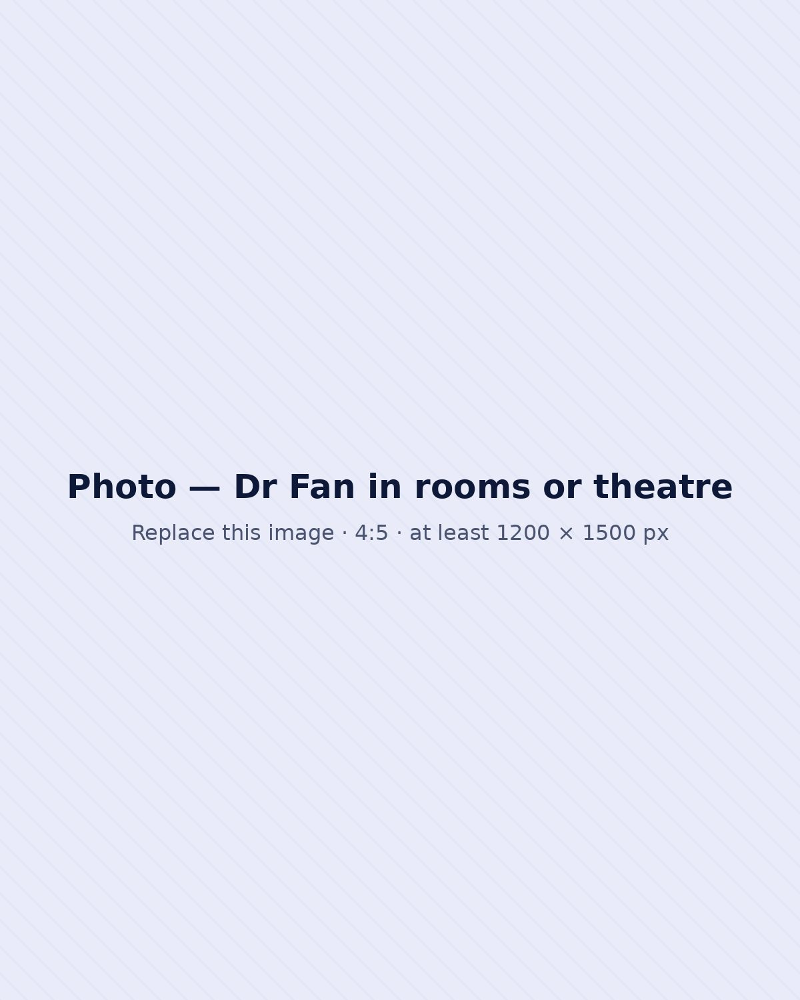

Gastroscopy
A camera examination of the oesophagus, stomach and upper small bowel. A day procedure under light sedation.
Learn more about gastroscopyBMed, MD, MHM, FRACS, GESA
Dr Howard Fan is a fellow of the Royal Australian College of Surgery (FRACS) with over 10 years of clinical experience. Having graduated from the University of New South Wales (UNSW) with Doctors of Medicine and Masters of Health Management, Dr Fan now manages a broad range of elective, emergency and trauma conditions. Dr Fan specialises in minimally invasive surgery including gastroscopy, colonoscopy, and laparoscopic (keyhole) surgery, and is very experienced in the excision of skin cancers and other skin lesions with reconstruction techniques designed to optimise the cosmetic outcomes.
Outside of the operating room, Dr Fan is actively engaged in teaching the next generation of doctors. He is a lecturer for Charles Sturt University and supervises surgical trainees at Griffith Hospital. Furthermore he is committed to maintaining high clinical standards through ongoing audit, adherence to contemporary guidelines and active professional development.
Dr Fan offers his services across metropolitan Sydney and regional NSW in treating a range of problems including that of the oesophagus, stomach, gallbladder, bowels, hernias, haemorrhoids, skin cancers, and more...
My Mission
Improving your health
My Vision
Elevating the standards of healthcare
Procedures
A camera examination of the oesophagus, stomach and upper small bowel. A day procedure under light sedation.
Learn more about gastroscopyA camera examination of the large bowel. A day procedure under light sedation, with bowel preparation beforehand.
Learn more about colonoscopySurgery through small incisions with a camera and fine instruments, which means less scarring, less pain and a shorter stay.
Learn more about laparoscopic surgeryKeyhole removal of the gallbladder, usually recommended when gallstones are causing symptoms.
Learn more about gallbladder surgeryRepair of groin and abdominal wall hernias. Hernias don’t heal on their own and tend to grow over time.
Learn more about hernia surgerySurgery for reflux when lifestyle measures and medication are not controlling symptoms.
Learn more about anti-reflux surgeryElective and emergency surgery for conditions of the small and large bowel.
Learn more about bowel surgeryTreatment for haemorrhoids when simpler measures haven’t brought relief.
Learn more about haemorrhoid surgeryExcision of skin cancers and other lesions, with reconstruction techniques designed to optimise the cosmetic outcome.
Learn more about skin cancer surgery…and more
Your surgery
Ask your GP for a referral to Dr Howard Fan. Referrals can be emailed straight to us, and we’ll contact you to arrange an appointment.
Dr Fan explains your diagnosis, outlines all appropriate management options and answers your questions thoroughly. When surgery isn’t the best option, you’ll get honest guidance on the alternatives.
You’ll receive individual instructions. As a general guide:
Gastroscopy and colonoscopy are day procedures under light sedation. After keyhole surgery, most patients go home the same day or the next.
Most people return to light activities within a few days. After keyhole surgery:
General information only. Your own instructions may differ. See operation risks and post-operative instructions.

A message from Dr Howard Fan
“I understand that surgery can be confronting. My priority is to ensure that every patient feels informed, supported and confident in their treatment plan.”
I take the time to clearly explain diagnoses, outline all appropriate management options, and answer questions thoroughly. Where surgery is required, my focus is on safe technique, thoughtful decision-making and careful postoperative follow-up. When surgery is not the best option, I provide honest guidance and alternative pathways.
My goal is simple: to deliver high-quality surgical care with clarity, respect and professionalism.
Locations
In-person at nine locations, or by telehealth to save you time.
Send your GP referral letter and we’ll contact you to arrange an appointment.
No-gap direct referral gastroscopy and colonoscopy for suitable patients. Email referrals to admin@drfan.com.au.
Laparoscopic surgery, often called keyhole surgery, involves performing operations through small incisions rather than a single large incision. The primary benefits include significantly reduced post-operative pain, smaller scars, a lower risk of infection, and a faster return to normal activities and work. Dr Howard Fan specialises in laparoscopic hernia, gallbladder, and bowel surgery.
While recovery varies by procedure, most patients undergoing laparoscopic surgery can return home the same day, or by the next day. Light activities can usually resume within a few days.
It depends. Gallbladder removal (cholecystectomy) is recommended if gallstones are causing symptoms like biliary colic (abdominal pain), inflammation, or jaundice. If left untreated, symptomatic gallstones can lead to serious complications such as pancreatitis or bile duct infections. Because the gallbladder is a non-essential organ, its removal generally has no long-term impact on digestion for most patients. However, if you have no symptoms, it is not always necessary to remove your gallbladder. Consider a consultation with Dr Howard Fan to discuss your specific situation.
Most people can return to a normal diet. However, if you are having diarrhoea, consider a low-fat diet for the first few weeks to allow the digestive system to adjust. This is because bile that is normally stored in the gallbladder is used to help digest fats/oils, and without the gallbladder, the ability to digest fats/oils are diminished. Gradually reintroducing fats/oils helps prevent temporary digestive discomfort or bloating.
No. Having a hernia is like having a hole in the wall. The hole does not cover itself. Likewise a hernia is a mechanical defect in the abdominal wall that cannot heal itself. While some hernias are painless, they typically increase in size over time. Surgery is recommended if you are having symptoms of pain or the hernia is getting larger. Urgent surgery is required if important structures, such as the bowel, are stuck in the hernia.